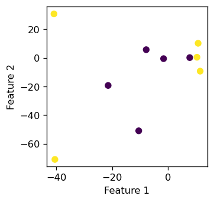

%load_ext autoreload
%autoreload 2Source code for this blog post
Here is a link to the source code for this Kernel Logistic Regression blog post.
Reference for this blog post
Here is a link to the main reference we are using when creating this blog post.
Introduction.
In this blog post I am going to discuss kernel logistic regression for binary classification. Recall that in previous blog posts, the visualization of the data set with \(2\) features looks graphically like it could be reasonably separated by a line. With more features, we could no longer visualize in \(2\) dimension, but the idea is the same, we use linear separation, like a hyperplane. However, what if the data is dominated by other patterns that are not suitable for a straight line (or a straight plane if you will) separation? Hence, we need to use some other methods, and hence let us use kernel logistic regression.
Recall the empirical risk minimization problem in previous blog posts, which is finding the weight vector w that minimize the loss function \(L(w)\). \[ \hat{w} = \arg \min_{w} L(w), \] where the loss function \(L(w)\) is of the following form: \[ L(w) = \frac{1}{n} \sum_{i=1}^{n} \ell( \langle w, x_i \rangle, y_i ), \] and $(, y ) $ is the logistic loss from the previous blog post. However, previously, we only studied linear decision boundaries, and now we want to study nonlinear patterns. Hence, instead of feature vector \(x_i\), we need modified feature vector \(\kappa(x_i)\) that does the following: \[
\kappa(x_i) =
\begin{bmatrix}
&k(x_1, x_i)\\
&k(x_2, x_i)\\
&\vdots\\
&k(x_n, x_i)\\
\end{bmatrix}
\] where \(k: \mathbb{R}^2 \rightarrow \mathbb{R}\) is called a kernel function. Hence our empirical risk function (loss function) is now \[ L_k(w) = \frac{1}{n} \sum_{i=1}^{n} \ell( \langle w, \kappa(x_i) \rangle, y_i ), \] where the subscript \(k\) in \(L_k(w)\) indicates we are using a kernel function \(k\).
First, let’s import some libraries, and let’s create an artificial data set that has nonlinear patterns.
# from sklearn.datasets import make_blobs
from sklearn.datasets import make_moons, make_circles, make_blobs, make_biclusters, make_classification
from matplotlib import pyplot as plt
plt.rcParams["figure.figsize"] = (6,3)
plt.rcParams['figure.dpi'] = 117
plt.rcParams['savefig.dpi'] = 78
import numpy as np
np.random.seed(42)
from sklearn.linear_model import LogisticRegression
from mlxtend.plotting import plot_decision_regions
np.seterr(all="ignore"){'divide': 'ignore', 'over': 'ignore', 'under': 'ignore', 'invalid': 'ignore'}First, we use make_moons from sklearn.datasets to generate some artificial data. How to deal with the nonlinear pattern we see in the plot below (graph on the left)? it seems a linear separator like a straight line will not do a satisfactory job here. Hence, we need kernel logistic regression, which we implemented in kernel_logistic.py, and we are going to import it into this notebook.
from sklearn.metrics.pairwise import rbf_kernel
from kernel_logistic import KLR
X_moon, y_moon = make_moons(200, shuffle = True, noise = 0.1)After seeing this data set below, we would guess that a linear classification would not do a great job at classifying the patterns we see here with our eyes. Hence, without further ado, let’s see how our KLR, kernel logistic regression handle this binary classification problem. Let’s choose a gamma = 1.8 and fit our model.
from kernel_logistic import KLR
KLR5 = KLR(rbf_kernel, gamma = 1.8)
KLR5.fit(X_moon, y_moon)KLR5.my_plot(X_moon, y_moon, "make_moons")We see that we achieved a training score of \(0.985\). Not bad at all! Also, just looking at the graph on the right, we see that the decision boundary looks spot on, and we could tell it is a good classification by just looking at it. The blue squares land correctly in the blue region, and the orange triangles land correctly in the orange region. Still, let’s create a fresh synthetic data that our Kernel Logistic Regression has not seen before, and test it on that.
X_moon2, y_moon2 = make_moons(200, shuffle = True, noise = 0.1)Below, we see a testing score of \(0.935\), which is not bad at all considering our model has not seen this perticular synthetic data before!
KLR5.my_plot(X_moon2, y_moon2, "make_moons")
Not bad at all! We see that KLR did a decent job fitting the non-linear decision boundary, and achieved an accuracy score above \(0.9\). The data is quite neatly separated by this curvy decision boundary our KLR generated. Now, let’s explore the parameter gamma and also experiment with data that has different amount of noise in it.
Choosing gamma and Try on a tiny example
To start us off, we manually create a tiny data set, and we call the fit function that we implemented in the source code (link at the start of the blog). We start with a big value for gamma: gamma = 100, and in this tiny data set, we could see clearly what’s going on with the decision boundary, and a tiny data set could also help with debugging purposes.
XX = np.array([
[-40.84739307, 30.71154296],
[ 11.46814927, -9.28580296],
[ -40.5192833, -70.94984582],
[ 10.73327397, 10.17310931],
[ 10.33197143, 0.43375035],
[ -1.62726102, -0.54736954],
[-7.84739307, 5.71154296],
[ -21.46814927, -19.28580296],
[ -10.5192833, -50.94984582],
[ 7.73327397, 0.17310931],
])
yy = np.array([1, 1, 1, 1, 1, 0, 0, 0, 0, 0])
plt.rcParams["figure.figsize"] = (3,3)
plt.scatter(XX[:,0], XX[:,1], c = yy)
labels = plt.gca().set(xlabel = "Feature 1", ylabel = "Feature 2")
It seems that those \(10\) data points does not display a linear pattern, which is what we want. Now we create an instance of the KLR class with gamma = 100 and test our fit function to see if it could classify these \(10\) points with \(100 \%\) accuracy.
from kernel_logistic import KLR
KLR = KLR(rbf_kernel, gamma = 100)
KLR.fit(XX, yy)We see that our classifier makes a little circular boundary around each orange triangular data points, while the rest of the region is all classified as blue for the blue squares. gamma essentially controls how “wiggly” our decision boundary is allowed to be. If gamma is small, our decision boundary would be less curvy, and if gamma is too big, we tend to overfit and produce the picture below.
plot_decision_regions(XX, yy, clf = KLR)
mypredict = KLR.predict(XX)
title = plt.gca().set(title = f"Accuracy = {(mypredict == yy).mean()}",
xlabel = "Feature 1",
ylabel = "Feature 2")Also, we do achieve \(100\%\) accuracy here, since our accuracy is \(1.0\). But if you insist on pop open the hood and inspect what’s underneath, let’s print out the actual label yy and our predicted labels, and see that they are indeed the same.
print(f"Actual labels: {yy}")
print(f"Predicted labels: {KLR.predict(XX)}")Actual labels: [1 1 1 1 1 0 0 0 0 0]
Predicted labels: [1 1 1 1 1 0 0 0 0 0]Now, with the same tiny data set, we use a very small gamma and see how the decision boundary would look like. Hence, let gamma = 0.05.
from kernel_logistic import KLR
KLR = KLR(rbf_kernel, gamma = 0.05)
KLR.fit(XX, yy)
plot_decision_regions(XX, yy, clf = KLR)
mypredict = KLR.predict(XX)
title = plt.gca().set(title = f"Accuracy = {(mypredict == yy).mean()}",
xlabel = "Feature 1",
ylabel = "Feature 2")we see that our decision boundary is less “smooth” and looks more “jagged”, so choosing a good gamma would decide the right complexity for our decision boundary, hence the parameter gamma is quite important to this binary classification problem.
Choosing different noise level and Try on a synthetic data set with make_circles
This time, we set the size of the data set to contain \(200\) data points, and we call mak_circle to generate our data. We set noise = 0.8, so our data set is very noisy, and in the visualization below (the plot on the right), we see that we cannot really distinguish the circles by eye, so the data set is indeed very noisy and chaotic.
X_cir, y_cir = make_circles(200, shuffle = True, noise = 0.8)Let’s set gamma = 1.8 and train our model by calling the .fit() function.
from kernel_logistic import KLR
KLR6 = KLR(rbf_kernel, gamma = 1.8)
KLR6.fit(X_cir, y_cir)Below, in the plot on the left, we see that with very noisy data, our Kernel Logistic Regression only scored \(0.63\) in accuracy, and judging by looking at the picture, we feel that our classifier only did a slightly above average job at classifying the data points. Hence, noisy data does negatively affect the performace of our Kernel Logistic Regression.
plt.rcParams["figure.figsize"] = (8,4)
KLR6.my_plot(X_cir, y_cir, "make_circles")Still, let’s test our trained model on a fresh copy of synthetic data generated using make_circles. This time, the testing accuracy is only \(0.435\), which is less than \(0.5\). Hence, we might be better off just guess randomly instead of applying our training model in this case!
X_cir2, y_cir2 = make_circles(200, shuffle = True, noise = 0.8)
KLR6.my_plot(X_cir2, y_cir2, "make_circles")Now, we try with a data set with very little noise by setting noise = 0.05, and let the rest of the parameter stay the same. Hence, we keep gamma = 1.8, number of data points \(200\), etc.
X_cir3, y_cir3 = make_circles(200, shuffle = True, noise = 0.05)from kernel_logistic import KLR
KLR2 = KLR(rbf_kernel, gamma = 1.8)
KLR2.fit(X_cir3, y_cir3)
fig, axarr = plt.subplots(1,2)
axarr[0].scatter(X_cir3[:,0], X_cir3[:,1], c = y_cir3)
axarr[0].set(xlabel = "Feature 1", ylabel = "Feature 2", title = "artificial data created by make_circles")
axarr[1].plot()
plot_decision_regions(X_cir3, y_cir3, clf = KLR2)
yourpredict = KLR2.predict(X_cir3)
axarr[1].set(title = f"Accuracy = {(yourpredict == y_cir3).mean()}",
xlabel = "Feature 1",
ylabel = "Feature 2")
plt.tight_layout()This time, since our data has pretty clear patterns, and has very little noise, our Kernel Logistic Regression did a great job at classifying the data points and engineering the decision boundary. We see that decision region plot on the right looks spot on, and the accuracy score is around \(0.95\), which is pretty high compared to the score we had before when the data was noisy.
Try other problem geometries
let’s start with a data set generated by make_blobs function, with a reasonable amount of standard deviations (which is a proxy for noise in this case) in it.
X, y = make_blobs(n_samples = 200, centers = 2, n_features = 2, cluster_std=3, random_state=42)Let us set gamma = 2.45 and see how well we do in this case.
from kernel_logistic import KLR
KLR3 = KLR(rbf_kernel, gamma = 2.45)
KLR3.fit(X, y)from matplotlib import pyplot as plt
plt.rcParams["figure.figsize"] = (8,4)
KLR3.my_plot(X,y, "make_blobs")
We see that we achieved a very high accuracy score of \(0.995\). We could also call the .predict() function to find out the predicted value and compare that to the actual value of y, and see that they indeed match up.
print(f"Actual labels: {y}")
print(f"Predicted labels: {KLR3.predict(X)}")Actual labels: [1 1 1 0 1 1 1 1 0 1 0 1 0 1 1 0 1 1 1 1 1 1 0 1 0 0 1 0 1 0 0 1 0 0 0 1 0
1 0 1 0 1 1 1 0 1 0 0 0 1 1 0 0 0 0 1 0 0 1 1 1 1 1 0 1 0 0 1 0 0 1 0 0 0
1 0 0 1 0 0 1 1 1 1 1 1 0 1 1 1 0 0 0 0 1 0 0 1 0 1 1 0 1 0 0 1 1 1 1 0 1
0 1 0 1 1 0 0 0 1 0 1 1 0 0 1 0 0 0 1 0 1 1 0 1 1 0 1 1 0 1 0 0 0 0 1 1 1
0 1 0 1 1 1 1 0 0 0 0 0 0 1 0 1 0 0 1 1 1 0 1 1 0 1 0 0 0 1 0 1 1 1 0 0 0
0 0 0 1 0 1 0 0 1 0 0 1 0 1 0]
Predicted labels: [1 1 1 0 1 1 1 1 0 1 0 1 0 1 1 0 1 1 1 1 1 1 1 1 0 0 1 0 1 0 0 1 0 0 0 1 0
1 0 1 0 1 1 1 0 1 0 0 0 1 1 0 0 0 0 1 0 0 1 1 1 1 1 0 1 0 0 1 0 0 1 0 0 0
1 0 0 1 0 0 1 1 1 1 1 1 0 1 1 1 0 0 0 0 1 0 0 1 0 1 1 0 1 0 0 1 1 1 1 0 1
0 1 0 1 1 0 0 0 1 0 1 1 0 0 1 0 0 0 1 0 1 1 0 1 1 0 1 1 0 1 0 0 0 0 1 1 1
0 1 0 1 1 1 1 0 0 0 0 0 0 1 0 1 0 0 1 1 1 0 1 1 0 1 0 0 0 1 0 1 1 1 0 0 0
0 0 0 1 0 1 0 0 1 0 0 1 0 1 0]In the next example, we use make_classification to make some sythetic data with \(4\) features. Since we have more than \(2\) features, we could only plot \(2\) dimensions at a time to visualize how our classification performs. Let’s generate the data set first.
X_class, y_class = make_classification(n_samples = 200,
n_classes = 2,
n_redundant= 0,
n_informative= 2,
n_features = 4,
n_clusters_per_class = 1,
class_sep = 1.5,
random_state=42)Now, we set gamma = 2.45 and we train our Kernel Logistic Regression on this data set.
from kernel_logistic import KLR
KLR4 = KLR(rbf_kernel, gamma = 2.45)
KLR4.fit(X_class, y_class)Next, we call our costom function .myprint() that generate the plots for us that only focuses on the first \(2\) dimensions, since we can only plot \(2\) dimension at a time in 2D.
from matplotlib import pyplot as plt
plt.rcParams["figure.figsize"] = (6,3)
value = 1
width = 1
KLR4.myprint(X_class, y_class, "make_classification", value, width)Now, let’s also take a peak at how our Kernel Logistic Regression is doing in dimension \(3\) and \(4\). We see that the decision boundary looks pretty good! Notice that feature is labeled 0, 1, 2, 3, so we are looking at feature 2 and 3 here!
plt.rcParams["figure.figsize"] = (3,3)
plot_decision_regions(X_class, y_class, clf = KLR4,
feature_index=[2,3],
filler_feature_values={0: value, 1: value},
filler_feature_ranges={0: width, 1: width})
yourpredict = KLR4.predict(X_class)
title = plt.gca().set(title = f"Accuracy = {(yourpredict == y_class).mean()}",
xlabel = "Feature 2",
ylabel = "Feature 3")